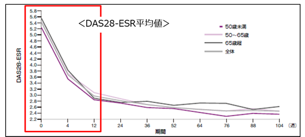
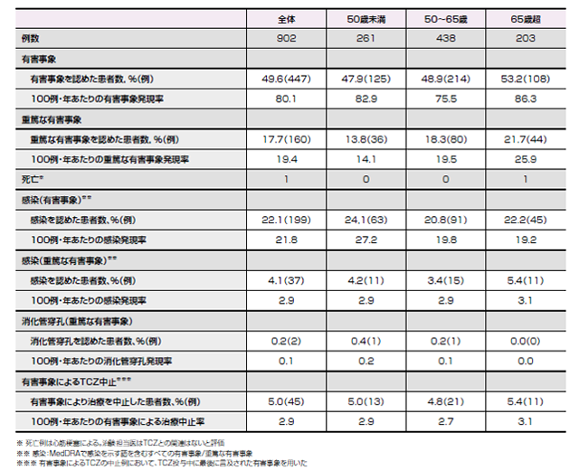

対オレンシア①高齢者
アクテムラは年齢に関係なく高い有効性安全性を示した（ICHIBAN Study）
□目的：
ドイツにおいて実施中の中等度～高度関節リウマチ患者に対する
長期アクテムラ治療の有効性を安全性を評価したICHIBAN STUDY
年齢別の有効性・安全性を評価する。
□方法：
ドイツの250施設が参加。プロスペクティブ試験。
ベースラインデータを収集できた患者2999例のうち、902例を解析
観察期間104週。サブグループは50歳未満、50～65歳、65歳超とした。

DAS28-ESRは治療開始早期から減少した。
最終来院時のDAS28寛解率は以下の通り
50歳未満:55.2%
50-65歳 :51.6%
65歳以上:48.8%
(P=0.3810,X2-test two sided)

- ・有害事象の発現率は65歳以上でわずかに多い傾向が認められたが、有意差はなく同様であった。
- ・重篤な有害事象の発現率に群間差はなかった
（P=0.0974,Mann-Whitney両側検定） - ・有害事象によるアクテムラ中止率は各群同様であった